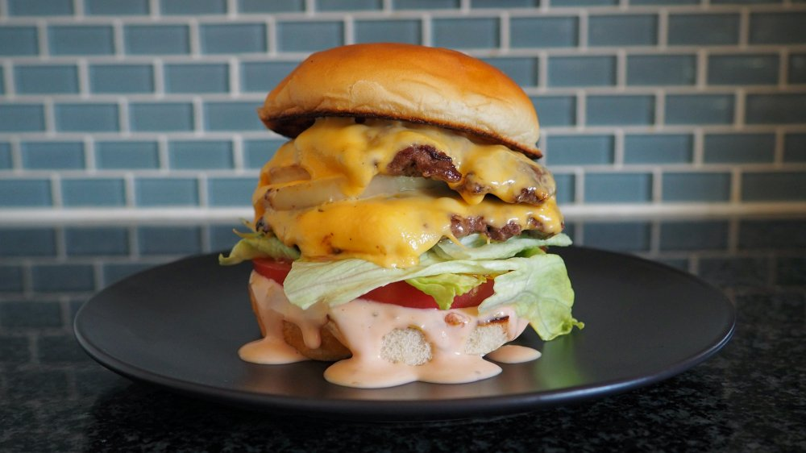

Home
In N Out Copycat Burgers

Description
If a fast-food sandwich were capable of becoming a legend, it would definitely be the In-N-Out Double-Double burger.
Sure, its status as the best fast-food hamburger has been disputed over the years by those who claim Whataburger and
Five Guys make a superior sandwich. But, even if you've moved on to loving other burgers, it's almost impossible to
argue that In-N-Out has inspired a cult following over the years. People travel hundreds of miles for their burgers,
hire the In-N-Out Cookout Truck to serve up burgers at their wedding, and some have even figured out how to get
burgers shipped to their homes.
The menu is strikingly simple and has only a few options (not counting their not-so-secret menu, of course). That
said, it's the simplicity that we crave. It's just two never-frozen, all-beef patties, cooked to order and smothered
with ooey, gooey American cheese, In-N-Out's famous secret spread, and topped with freshly sliced onion, lettuce, and
tomato. We wondered if it was as easy as that to replicate the famous burger at home. It turns out that it's not only
possible to pull it off, but you don't even need magic to make it happen.
Read more here.
Ingredients
- 3 tablespoons mayonnaise
- 1 tablespoon ketchup
- 2 teaspoons dill pickle relish
- ½ teaspoon sugar
- ½ teaspoon distilled white vinegar
- 2 pinches kosher salt
- ½ pound ground chuck, preferably 80/20
- 2 small plain hamburger buns
- Nonstick cooking spray
- 4 slices American cheese
- 2 slices white onion, not separated
- 2 large tomato slices, about ¼-inch thick
- 2 leaves iceberg lettuce, core removed and torn to fit the bun
Preparation Steps
- Make the spread by combining the mayo, ketchup, pickle relish, sugar, white vinegar,
and a pinch of salt in a small bowl. Cover the bowl and store the mixture in the refrigerator
until ready to use.
- Meanwhile, prepare the burger patties by dividing the beef into four 2-ounce portions.
Place the portions on a large piece of wax paper and flatten each piece with your hands
into a 4-inch, super-thin patty.
- Preheat a large stainless steel skillet over medium-high heat. Add the burger buns,
cut-side down, and cook until they're deeply golden brown and crispy, about 4 minutes.
Remove the buns from the pan and set aside.
- Lightly spray the pan with nonstick cooking spray and season the top side of the burger
patties with kosher salt. Add the patties, salt-side down, to the hot pan. You may only
be able to cook two burger patties at a time. Season the other side with kosher salt and
cook the burgers until they're lightly crispy and browned, about 2 minutes.
- Flip the burgers over. Before adding the cheese, fold the top quarter of each cheese slice
on top of itself, creating a portion of the cheese that is doubled. Add one folded cheese
slice to each patty. Top one of the cheese slices with one onion slice.
- Continue to cook the burgers for about 2 minutes, until the bottom is browned. If the
cheese is not fully melted in this time, remove the pan from the heat and cover it with
a lid for 1 minute.
- While the patties finish cooking, assemble the bottom bun of the burger. Place a heaping
tablespoon of the spread on the bottom bun, followed by a tomato slice. Cup a few leaves
of iceberg lettuce between your hands to compact them and place the lettuce on top of the
tomato.
- When the burgers are finished cooking, use a spatula to stack the cheese patty on top of
the onion-topped patty. Gently place the patties on top of the garnished bottom bun and
finish the burger with the top bun. Be careful not to press down on the burger, which will
flatten the soft bun.
- Wrap the burger in wax paper, if you desire, before serving. Serve immediately.